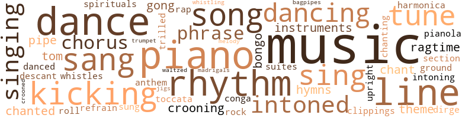
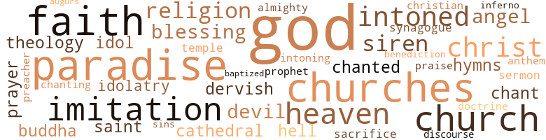

Landlord (The), by Hunter, Kristin (1966)
156 music-related terms matched in this text.
Most frequent terms in this topic: music (21); piano (10); dance (8); line (7); rhythm (7)
bagpipe.n.01
Definition: a tubular wind instrument; the player blows air into a bag and squeezes it out through the drone
| word | sentence |
|---|---|
| bagpipes | " Scottish bagpipes ? |
bongo.n.01
Definition: a small drum; played with the hands
| word | sentence |
|---|---|
| bongo | Across the street Copee 's competition , a band of skilled performers on the bongo and conga drums , took up the pause with artful thumps and flutterings . |
| bongos | From far off , he also heard tom-toms ( or were they bongos ? ) |
chant.n.01
Definition: a repetitive song in which as many syllables as necessary are assigned to a single tone
| word | sentence |
|---|---|
| chant | He continued these reassuring pattings of himself in the dangerous darkness while Marge moved about the room , intoning a chant with lyrics like those of a football cheer or of the rock-and-roll songs he had heard on certain very bad mornings when the clock-radio dial had been set at the wrong place on the drunken night before . |
| chant | Marge 's chant went something like : Boola boola baba , Ya ya ya , Baba baba boola , Ya ya ya . |
chorus.n.01
Definition: any utterance produced simultaneously by a group
| word | sentence |
|---|---|
| chorus | A chorus of grief responded to this announcement . |
| chorus | And in the background , for diversion , a chorus of carefree darkies . " |
| chorus | From the field , a chorus of young voices was raised in protest . |
clipping.n.01
Definition: an excerpt cut from a newspaper or magazine
| word | sentence |
|---|---|
| clippings | Plastered over every inch of wall space were hundreds of aging magazine pictures , recipes , newspaper clippings , post cards , record covers , sheet music folders , and photographs . |
conga.n.01
Definition: music composed for dancing the conga
| word | sentence |
|---|---|
| conga | Across the street Copee 's competition , a band of skilled performers on the bongo and conga drums , took up the pause with artful thumps and flutterings . |
cornet.n.01
Definition: a brass musical instrument with a brilliant tone; has a narrow tube and a flared bell and is played by means of valves
| word | sentence |
|---|---|
| trumpet | But if I catch you wrong , Papa , l know you do n't mind dyin ' . . . . " Shhhh , " Lanie said , deigning to accept a drink but not to converse during the razzmatazz trumpet bridge between the sacred verses . |
croon.v.01
Definition: sing softly
| word | sentence |
|---|---|
| crooning | Fanny , more tempting than ever in tight pink lace , had met him at the door , hair soft and sweet , voice crooning to match , promising reason . |
| crooned | Easy , " he crooned as a high one floated up from the mound and Willie Lee laid into it with a sudden twist of his shoulders . |
| crooning | But now it was crooning : I 'm a hard-workin ' woman and you know l do n't mind tryin ' . |
dance.n.01
Definition: an artistic form of nonverbal communication
| word | sentence |
|---|---|
| dance | As he walked into Fanny 's and Charlie 's apartment , the first person he spied was his erstwhile dance critic demonstrating her own very adequate sense of rhythm . |
| dance | Lanie leaped by , engaged in a downright disgraceful dance with the scarfaced bartender , and cast a spiteful look at Elgar over her twitching shoulder . |
| dance | Instead he did a tentative step of the latest dance Fanny was teaching him , the pachanga . |
| dances | She had tried to teach him dozens of dances with nutty names : the slop , the frug , the hully-gully , the mashed potatoes , the merengue , the lemon merengue - but the way Elgar performed them , they all ended up looking like a lopsided , skipping two-step . |
| dance | What the hell , there was a new dance invented every week , and no civilized adult could be expected to keep up with them all . |
| dances | Through it he could see Walter Gee dancing about to the music of the radio ; performing barefoot , with solemn grace and shaming expertness , one of those intricate dances Fanny had tried to teach Elgar . |
| dance | He was beginning a kind of rain dance , hopping around slowly on one foot . |
| dance | Pretty good dance at the club last week . |
dance.n.02
Definition: a party of people assembled for dancing
| word | sentence |
|---|---|
| dance | As the snake dance surged toward Elgar , he began to feel like a tender morsel meant for forthcoming stew . |
| dance | The snake dance began to curl and writhe in a circle around Elgar 's parents , turning them into small objects of pity , exorcising their powerful Furies from his soul . |
dance.v.02
Definition: move in a pattern; usually to musical accompaniment; do or perform a dance
| word | sentence |
|---|---|
| dancing | To even up the partner situation , Lanie relinquished her male dervish and began dancing with one of the women . |
| dancing | Through it he could see Walter Gee dancing about to the music of the radio ; performing barefoot , with solemn grace and shaming expertness , one of those intricate dances Fanny had tried to teach Elgar . |
dance.v.03
Definition: skip, leap, or move up and down or sideways
| word | sentence |
|---|---|
| dancing | Oh , it was a pretty , pretty net in which they had him dancing like a deranged butterfly , balancing his doom against his father 's . |
| danced | Elgar looked away guiltily , though he had been glad to see her at the party , and sorry it had been time for another girl 's number to come in the was evident when they danced . |
| dancing | There was silence in the room except for the dainty tinkle of Marge 's spoon in the cup and the rippling of hundreds of tiny , ghostly rodents , dancing behind her varicolored wallpapers and up and down Elgar 's spine . |
| dancing | One part of him hating , the other admiring the clean , athletic , independent stride , the muscles dancing under receding red jersey . |
descant.n.01
Definition: a decorative musical accompaniment (often improvised) added above a basic melody
| word | sentence |
|---|---|
| descant | Late at night he heard Marge chanting obscene spells below , while somewhere beneath her , Copee muttered , " Hate , hate , hate , " and Fanny performed a shrill descant , . |
dirge.n.01
Definition: a song or hymn of mourning composed or performed as a memorial to a dead person
| word | sentence |
|---|---|
| dirge | The dirge of a victim . " |
gong.n.01
Definition: a percussion instrument consisting of a metal plate that is struck with a softheaded drumstick
| word | sentence |
|---|---|
| gong | One warrior improvised a gong from Marge 's biggest pot lid . |
| gongs | With black enamel and red lampshades and a few tin gongs and paper scrolls , she had transformed the place into a kind of Chinese temple . |
grind.v.04
Definition: dance by rotating the pelvis in an erotically suggestive way, often while in contact with one's partner such that the dancers' legs are interlaced
| word | sentence |
|---|---|
| ground | The more they ground their teeth in torment at the inequities of a society that permitted some to be rich and others poor , the more money perversely flowed toward them . |
harmonica.n.01
Definition: a small rectangular free-reed instrument having a row of free reeds set back in air holes and played by blowing into the desired hole
| word | sentence |
|---|---|
| harmonica | One of the musicians took out a harmonica , wiped it across his mouth , and began to improvise a solo against the intricate drum rhythms . |
hymn.n.01
Definition: a song of praise (to God or to a saint or to a nation)
| word | sentence |
|---|---|
| hymns | It was as if they heard an old pianola somewhere playing hymns instead of ragtime . |
| anthem | " To some , " Borden said , " it is an anthem of triumph , Elgar . |
| hymns | From now on , I will sing only hymns . |
jig.n.01
Definition: music in three-four time for dancing a jig
| word | sentence |
|---|---|
| jigs | Irish jigs and reels ? |
kick.v.04
Definition: kick a leg up
| word | sentence |
|---|---|
| Kicking | Kicking the bag of garbage affectionately as he went out , Elgar decided to take Lanie 's advice and make his tenants respect him . |
| kicking | There she was in the far corner , untying yards of strangling leather straps and blissfully kicking her sandals away . |
| kicking | " Always out looking for some action , kicking balls and batting them and throwing them around . |
| kicking | Elgar crowed , kicking his feet in the air . |
| kicking | The can-can dancers , on for an encore , linked arms with the Dying Swan , and exited kicking to enthusiastic applause . |
| kicking | Always the second-rate , Elgar thought gloomily , kicking the leprous paint on the stairs as he descended to what he laughingly called home . |
madrigal.n.01
Definition: an unaccompanied partsong for 2 or 3 voices; follows a strict poetic form
| word | sentence |
|---|---|
| madrigals | " I suppose you have never heard of English madrigals ? " |
mechanical_piano.n.01
Definition: a mechanically operated piano that uses a roll of perforated paper to activate the keys
| word | sentence |
|---|---|
| pianola | It was as if they heard an old pianola somewhere playing hymns instead of ragtime . |
music.n.01
Definition: an artistic form of auditory communication incorporating instrumental or vocal tones in a structured and continuous manner
| word | sentence |
|---|---|
| music | Besides , they are playing my favorite kind of music upstairs . |
| music | Marge 's bittersweet music was indeed pouring out of her apartment . |
| music | Mr. and Mrs. Cumberson were swaying to the music , but not in the proper rhythm . |
| music | From beneath the piano , where she had crawled to be as close as possible to the music , Lanie sent him a scowl . |
| music | Insisting shrilly that ragtime and blues were really direct descendants of Ukrainian folk music . |
| music | The apparitions of many graceful women swaying in time to the music , all around him . |
| music | Warmth , friendliness , solicitude , good food , good music , comfort . |
| music | A little ejection music , please . " |
| music | She 's completely tone-deaf , all of us are , but she thinks she 's the world 's greatest appreciator of music . |
| music | You and me , we 're gon na make our own sweet music tonight . |
| music | So - so far we have art , music , English , history , and business courses . |
| music | Plastered over every inch of wall space were hundreds of aging magazine pictures , recipes , newspaper clippings , post cards , record covers , sheet music folders , and photographs . |
| music | It could almost be set to music . |
| music | Oh , I saw how you left your door open every time he came , so he would hear your music . |
| music | Through it he could see Walter Gee dancing about to the music of the radio ; performing barefoot , with solemn grace and shaming expertness , one of those intricate dances Fanny had tried to teach Elgar . |
| music | Whatever it was , Walter Gee did it wonderfully , his head bobbing , his arms flinging upward in rhythmic alternation , his small rump wagging in a perfect frenzy of identification with the music . |
| music | No light emerging from beneath , but plenty of music : " Danse Macabre , " " Valse Triste , " and the " Marche Funebre . " |
| music | " I decided to brush up on my music . |
| music | Fast cars and sweet music and fast , sweet women . |
| music | For instance , its mysterious relationship to music . |
| music | What about German music ? |
musical_instrument.n.01
Definition: any of various devices or contrivances that can be used to produce musical tones or sounds
| word | sentence |
|---|---|
| instruments | " People are not merely the instruments of your pleasure or the agents of your pain , Elgar . |
| instruments | There they were in a row : five squat , homely instruments in basic black , no nonsense about decorator colors or streamlined models . |
phrase.n.02
Definition: a short musical passage
| word | sentence |
|---|---|
| phrases | She had lit a black candle , and smoke seemed to be curling upward from the cup while she mumbled unintelligible phrases . |
| phrase | Especially effective when the phrase repeated was also " three times . " |
| phrases | He went on , with a few picturesque phrases , to tell Marge what he thought of her warming up her voice when she should have been warming up a good , nourishing meal . |
piano.n.01
Definition: a keyboard instrument that is played by depressing keys that cause hammers to strike tuned strings and produce sounds
| word | sentence |
|---|---|
| piano | " Aw , no , I ca n't be playing the piano this time of night . " |
| piano | " Oh , you do have a piano ! " |
| piano | Squatting evilly in the center was the only item in the world darker and more massive than Marge herself : a square black Victorian piano . |
| piano | Its sadness , drawn from a well of fourteen years * collected tears , was incongruous set to tinkling ragtime piano . |
| piano | All around the piano , flat feet were shuffling with the joy , joy . |
| piano | From beneath the piano , where she had crawled to be as close as possible to the music , Lanie sent him a scowl . |
| piano | - Oh well , Elgar thought recklessly , let them plot away , as long as the piano played on to drown out their unpleasantness . |
| piano | Instead of the businesslike clatter of pots and pans , the frivolous tinkle of honky-tonk piano issued from Marge 's apartment . |
| piano | But if I 'm gon na play the piano again , dishwater is no good for my hands . " |
| piano | Elgar nodded and plunged his arms deep into thick suds while Marge pranced back to her piano . |
pipe.n.04
Definition: a tubular wind instrument
| word | sentence |
|---|---|
| pipe | " I do not deny that there may be negative factors in your environment , Elgar , " Borden said , lighting his malodorous pipe with infuriating calm . |
| pipe | Borden , with the goddamn kindliness in his voice , puff-puffing on the pipe . |
ragtime.n.01
Definition: music with a syncopated melody (usually for the piano)
| word | sentence |
|---|---|
| ragtime | It was as if they heard an old pianola somewhere playing hymns instead of ragtime . |
| ragtime | Insisting shrilly that ragtime and blues were really direct descendants of Ukrainian folk music . |
rap.n.05
Definition: genre of African-American music of the 1980s and 1990s in which rhyming lyrics are chanted to a musical accompaniment; several forms of rap have emerged
| word | sentence |
|---|---|
| rap | At DuBois ' door , he gave a rap of stern authority . |
refrain.n.01
Definition: the part of a song where a soloist is joined by a group of singers
| word | sentence |
|---|---|
| refrain | Mothaw took up the refrain again . |
rhythm.n.04
Definition: the arrangement of spoken words alternating stressed and unstressed elements
| word | sentence |
|---|---|
| rhythm | I never thought a person could suffer from total lack of rhythm . " |
| rhythm | As he walked into Fanny 's and Charlie 's apartment , the first person he spied was his erstwhile dance critic demonstrating her own very adequate sense of rhythm . |
| rhythm | Mr. and Mrs. Cumberson were swaying to the music , but not in the proper rhythm . |
| rhythm | Elgar knelt , placed the root on the floor , stood up , and jumped on it repeatedly , shouting in rhythm with his jumps , " I do n't believe in magic , I do n't believe in magic , all you people are crazy , sick superstitious crazy , I 'm the only sane person around here , and I hope the roof caves in on all of you . " |
| rhythm | The author , Baxter A. Bold , M.D. , had said , " Repeat the desired result to oneself at bedtime , on arising , and in rhythm with one 's daily activities . " |
| rhythms | One of the musicians took out a harmonica , wiped it across his mouth , and began to improvise a solo against the intricate drum rhythms . |
| rhythm | But they changed their minds and stayed with Copee when he found the rhythm they understood and loved best , the rhythm of the preacher : " Who took you away from your rightful homes ? |
| rhythm | But they changed their minds and stayed with Copee when he found the rhythm they understood and loved best , the rhythm of the preacher : " Who took you away from your rightful homes ? |
rock_'n'_roll.n.01
Definition: a genre of popular music originating in the 1950s; a blend of black rhythm-and-blues with white country-and-western
| word | sentence |
|---|---|
| rock-and-roll | He continued these reassuring pattings of himself in the dangerous darkness while Marge moved about the room , intoning a chant with lyrics like those of a football cheer or of the rock-and-roll songs he had heard on certain very bad mornings when the clock-radio dial had been set at the wrong place on the drunken night before . |
section.n.01
Definition: a self-contained part of a larger composition (written or musical)
| word | sentence |
|---|---|
| Section | Section 221 ( d ) 3 , Levin , you should keep up with the times . " |
sing.v.02
Definition: produce tones with the voice
| word | sentence |
|---|---|
| sing | We came to hear you sing . " |
| sang | " Awww , it 's been twenty years since I sang for anybody . " |
| sing | I 'll just sing . " |
| sang | And for Walter Gee there was the wondrous train , a wooden bird that climbed a pole and sang , " Cuckoo , cuckoo , " a tin acrobat that did back-flips and somersaults in perpetual motion , and the last set of wooden blocks in town , the result of combing a dozen stores , because Elgar hated plastic . |
| sang | He sang as he swung along , so loudly and tonelessly that a mauvey-tweed matron , one of Mothaw 's Monday-afternoon concert friends , probably , stopped dead and stared . |
| sang | As she worked she sang , in an incongruously sweet little-girlish voice , accompanied by rhythmic slamming of lids and doors , I was out all night , my revolver in my hand . |
| sang | " Take us to our leader , " Sidney sang out , loud and clear . |
| Sing | Sing . " |
| sung | Nor was it possible to dismiss the recording of an art song , sung by a soprano with several cracks in her upper register , which was being played at top volume . |
| Sing | Sing no more wicked songs . |
| sing | From now on , I will sing only hymns . |
| sang | " No , do n't be silly , " a clear voice sang out . |
singing.n.01
Definition: the act of singing vocal music
| word | sentence |
|---|---|
| singing | Up then , and singing , even though the singing be hopelessly off key . |
| singing | Up then , and singing , even though the singing be hopelessly off key . |
| singing | Particularly since the lyrics she was singing were : Flat foot floogie with the floy , floy . |
| singing | " I was actually singing . |
song.n.01
Definition: a short musical composition with words
| word | sentence |
|---|---|
| songs | Rita loved bread lines , tin-roofed shacks , crokersack dresses , chain-gang songs , wildcat strikes , company stores , and other manifestations of authentic misery . |
| songs | He continued these reassuring pattings of himself in the dangerous darkness while Marge moved about the room , intoning a chant with lyrics like those of a football cheer or of the rock-and-roll songs he had heard on certain very bad mornings when the clock-radio dial had been set at the wrong place on the drunken night before . |
| song | It 's my theme song , Borden . |
| song | Nor was it possible to dismiss the recording of an art song , sung by a soprano with several cracks in her upper register , which was being played at top volume . |
| songs | Sing no more wicked songs . |
| song | Marge , as she expresses herself in song , seems to feel it is a tragic emotion . |
spiritual.n.01
Definition: a kind of religious song originated by Blacks in the southern United States
| word | sentence |
|---|---|
| spirituals | Some nice , sad spirituals perhaps . |
suite.n.01
Definition: a musical composition of several movements only loosely connected
| word | sentence |
|---|---|
| suites | Covering a hundred acres , this well-padded loony bin had been equipped with a split-level swimming pool , a forty-piece orchestra , a stable of horses , golf and tennis pros , and suites for each patient with names like the Dahlia Garden , the Rose Arbor , the Honeysuckle Bower , and the Primrose Patch . |
tenor_drum.n.01
Definition: any of various drums with small heads
| word | sentence |
|---|---|
| tom-toms | From far off , he also heard tom-toms ( or were they bongos ? ) |
theme.n.03
Definition: (music) melodic subject of a musical composition
| word | sentence |
|---|---|
| theme | It 's my theme song , Borden . |
| theme | He expanded on his theme as he descended to his non-air-conditioned Inferno . |
toccata.n.01
Definition: a baroque musical composition (usually for a keyboard instrument) with full chords and rapid elaborate runs in a rhythmically free style
| word | sentence |
|---|---|
| toccata | At the word " police " there was a toccata of high heels , and Fanny blazed into the vestibule again . |
tone.v.01
Definition: utter monotonously and repetitively and rhythmically
| word | sentence |
|---|---|
| chanted | " Down with you ! " he chanted , bounding up and down . |
| intoned | " They come and they go , " Marge intoned , " they sail and they light , just like birds flying North and flying South . |
| intoning | He continued these reassuring pattings of himself in the dangerous darkness while Marge moved about the room , intoning a chant with lyrics like those of a football cheer or of the rock-and-roll songs he had heard on certain very bad mornings when the clock-radio dial had been set at the wrong place on the drunken night before . |
| intoned | " Ya ya ya , " she intoned . |
| chanting | Late at night he heard Marge chanting obscene spells below , while somewhere beneath her , Copee muttered , " Hate , hate , hate , " and Fanny performed a shrill descant , . |
| intoned | " So , " Charlie intoned , " you would deny this poor woman the livelihood which she must earn to pay your unconstitutional rentals . |
| chanted | " The tribal wrath is aroused ! " he chanted . |
| intoned | Born to a life of misery , " Copee intoned . |
tune.n.01
Definition: a succession of notes forming a distinctive sequence
| word | sentence |
|---|---|
| tune | " Besides , it 's out of tune . " |
| tune | To a tune strangely resembling " For He 's a Jolly Good Fellow . " |
| lines | While Elgar , still suffering from a constitutional inability to shape himself along cubical lines , knew of his future only what he had always known : he could not stand to be like them . |
| line | While the other dancers , alternating sexes , formed a single line that heaved serpentlike around the apartment , Lanie and Lucy took off into a stratosphere of their own , performing in perfect unison , like a woman and her reflection in a mirror . |
| line | Tonight for inspiration we will consider the long line of the Lions of Judah . |
| line | Is n't that just the greatest little old punch line you ever heard ? " |
| tune | A guy who only wrote one tune , a tune everybody hates , and then kept writing it , ' Pomp and Circumstance ' backwards , ' Pomp and Circumstance ' sideways , ' Pomp and Circumstance ' upside down , until he must have hated it himself . |
| tune | A guy who only wrote one tune , a tune everybody hates , and then kept writing it , ' Pomp and Circumstance ' backwards , ' Pomp and Circumstance ' sideways , ' Pomp and Circumstance ' upside down , until he must have hated it himself . |
| line | He 's so important he speaks to God directly , on a private line . |
| line | " Borden , let 's abandon this line of approach . |
| lines | " I do n't know where you were today , but those were n't my lines you were in . |
| line | Unusually large crowds had formed on both sides of the street , and Elgar , feeling that both sidewalks were unsafe , proceeded cautiously up the middle , placing his feet firmly on the white line , swerving when necessary to dodge a large station wagon filled with hostile , dark faces and a rickety old Buick filled with grinning , friendly ones . |
| tune | It was not , after all , such a bad tune . |
| line | Check with DuBois on the survey results and start getting his costs in line . |
| melody | One more drink , and maybe I 'll understand why it takes melanin to produce melody . " |
upright.n.02
Definition: a piano with a vertical sounding board
| word | sentence |
|---|---|
| upright | He was an old-fashioned , dedicated civil servant ; a fine , upright , honorable old man , Elgar thought . |
waltz.v.01
Definition: dance a waltz
| word | sentence |
|---|---|
| waltzed | Yesterday she had waltzed in wearing a snazzy little scarlet number . |
warble.v.01
Definition: sing or play with trills, alternating with the half note above or below
| word | sentence |
|---|---|
| trilled | " Elgar dear , " she trilled , " you know how sensitive I am , musically speaking . |
whistle.n.01
Definition: the sound made by something moving rapidly or by steam coming out of a small aperture
| word | sentence |
|---|---|
| whistles | Best goddamn train you ever saw , reverses and chugs and whistles and even steams . |
whistle.v.01
Definition: make whistling sounds
| word | sentence |
|---|---|
| whistling | Lanie was whistling the blues while she worked . |
334 violence-related terms matched in this text.
Most frequent terms in this topic: hate (30); rage (17); fight (14); spite (13); gun (12)
abhor.v.01
Definition: find repugnant
| word | sentence |
|---|---|
| loathed | Now just listen while I quote from this book from a famous white writer : ' What is it that in the Albino man so peculiarly repels and often shocks the eye , as that sometimes he is loathed by his own kith and kin ? |
| loathe | I loathe cottage cheese . " |
abhorrence.n.01
Definition: hate coupled with disgust
| word | sentence |
|---|---|
| loathing | " I detest liver , " he said with calm loathing , and pushed it away . |
aggravation.n.01
Definition: an exasperated feeling of annoyance
| word | sentence |
|---|---|
| aggravation | Either I 'm gon na have to sue him for neglect and paternity , or divorce you on grounds of extreme cruelty and aggravation . |
aggression.n.01
Definition: a disposition to behave aggressively
| word | sentence |
|---|---|
| aggressions | Though even better if you take out your aggressions on appropriate objects . |
| aggressions | If you meet with resistance , take out your aggressions on your tenants . |
anger.n.01
Definition: a strong emotion; a feeling that is oriented toward some real or supposed grievance
| word | sentence |
|---|---|
| anger | Have you noticed , Elgar , that you have no trouble reacting with anger to any person except your father ? " |
| anger | Her eyes narrowing with anger , her voice climbing rapidly to fishwife range , she screamed , " I can show you both the birth certificates if you do n't believe me ! " |
| anger | Do n't show your anger . |
| ire | - Though he doubted , as he continued to listen , whether his mild , half-apologetic tour of the premises could have aroused so much ire . |
| Anger | Anger is a normal human emotion , Nimmo , one that demands release , though I would n't expect you to understand that . |
| anger | Now he could cope with Copee 's anger , with the poisoned darts of Marge 's black arts , with the combined enmity of all the other residents of 709 Poplar Street . |
| anger | Their anger is so strong . " |
| anger | From across the room the baby seemed to sense Elgar 's sudden flare-up of anger . |
| Anger | Anger brightened Lanie 's eyes while confusion colored her cheeks . |
| anger | You were full of anger . |
anger.v.02
Definition: become angry
| word | sentence |
|---|---|
| angered | It usually angered Elgar that he should never fail to notice the end of what must surely be the most fascinating hour of his day . |
assail.v.01
Definition: attack someone physically or emotionally
| word | sentence |
|---|---|
| assaulted | His tender pink ears were assaulted each night by the lurch and screech of the nightly auto accident and the scufflings and swearings of dedicated violence , sounds he had never thought could come from the throats of humankind . |
battle.v.01
Definition: battle or contend against in or as if in a battle
| word | sentence |
|---|---|
| battled | While they battled he would calmly consider his two alternatives . |
bayonet.n.01
Definition: a knife that can be fixed to the end of a rifle and used as a weapon
| word | sentence |
|---|---|
| bayonets | Their chipped paint , their scarred faces , their broken bayonets had depressed him . |
| bayonets | Fixing him with pinpoints of light that were sharp as bayonets . |
blunderbuss.n.01
Definition: a short musket of wide bore with a flared muzzle
| word | sentence |
|---|---|
| blunderbusses | Instead he was greeted by Venuses with permanently stopped clocks in their bellies , smirking porcelain Cupids , convoluted Chinese screens , rusty iron blunderbusses , ivory backscratchers , boot-scrapers , opera glasses , and beaded chatelaines . |
bridle.v.01
Definition: anger or take offense
| word | sentence |
|---|---|
| bridling | " Apparently you did n't learn your lesson very well , " Lanie said , full of bridling sensitivity at the mention of Fanny . |
bump.n.01
Definition: a lump on the body caused by a blow
| word | sentence |
|---|---|
| bump | Their last gesture , an insouciant bump and grind delivered with their backs to their audience , did something unspeakable to Elgar . |
cannon.n.04
Definition: heavy automatic gun fired from an airplane
| word | sentence |
|---|---|
| cannon | That harrumph , the backfiring of a twelve-inch cannon , announced a heavy forthcoming barrage . |
cannonball.n.01
Definition: a solid projectile that in former times was fired from a cannon
| word | sentence |
|---|---|
| cannonball | But when he raised it from the floor it developed appendages that clawed and kicked and a hard little cannonball that butted him violently in the chest The second match he struck revealed the lively bundle under his left arm to be Walter Gee Copee . |
| cannonball | human cannonball ? |
contemn.v.01
Definition: look down on with disdain
| word | sentence |
|---|---|
| scorn | Fanny 's upper lip curled in scorn . |
| despise | " I hate , loathe , and despise Christmas . |
| scorn | Her voice was ragged with scorn . |
| scorn | As she was silent except for a neigh of scorn , he switched the subject . |
| scorn | The weight of Fanny 's scorn was overwhelming , perhaps because she was now so enormous . |
| scorn | " Of course not ! " he answered himself with ringing scorn . |
craze.n.02
Definition: state of violent mental agitation
| word | sentence |
|---|---|
| frenzy | Elgar , deeply stirred by all this ethnic frenzy , was about to take off his shoes and join them when the competition poured in . |
| frenzy | Obviously he was a man who got up each morning in such a frenzy of racial rage that he ripped the sleeves from his shirts before putting them on . |
| frenzy | Whatever it was , Walter Gee did it wonderfully , his head bobbing , his arms flinging upward in rhythmic alternation , his small rump wagging in a perfect frenzy of identification with the music . |
destroy.v.04
Definition: put (an animal) to death
| word | sentence |
|---|---|
| destroyed | My father 's almost destroyed me . |
dive-bomb.v.01
Definition: bomb from a diving airplane
| word | sentence |
|---|---|
| dive-bombing | Next week , " he said , moving back hastily as Walter Gee charged , dive-bombing him with a model B-17 . |
draw.v.23
Definition: pull (a person) apart with four horses tied to his extremities, so as to execute him
| word | sentence |
|---|---|
| drawn | Lay there like a crumpled Pocahontas doll , her long black braids spread on the floor , her dress drawn up immodestly about her crazily placed thighs . |
| draw | Today he had to call Nimmo , get him to draw up the papers for incorporation . |
eliminate.v.03
Definition: kill in large numbers
| word | sentence |
|---|---|
| annihilated | Authority , as usual , did not take the trouble to recognize Elgar before it annihilated him . |
| annihilate | They are trying to annihilate me , and they 're succeeding . |
elimination.n.05
Definition: the murder of a competitor
| word | sentence |
|---|---|
| elimination | Process of elimination was one helpful technique , Elgar had found . |
engage.v.07
Definition: carry on (wars, battles, or campaigns)
| word | sentence |
|---|---|
| waged | Soon he came staggering back under a four-foot stack of vivid periodicals from which Elgar , to defend himself against the accusation of functional illiteracy , undertook heroically to read aloud " The Adventures of the Venusian Pelepods " ( a race of four-legged people , with giant foreheads and brains to match , who lived in caves ) ; " The Battle of the Sirian Satellites " ( waged with invisible , lethal rays issuing from the fingertips of a twelve-fingered band of stalwarts ) ; " The Death of the Moon-Crater Creatures " ; and Walter Gee 's favorites , " The Rocket Men on the Moon ( or Moom ) , " " The Rocket Men Fight the Crab People , " " The Rocket Men Meet the Dinosaurs , " " The Rocket Men and the Venusian Women . . . " More ! " cried Walter Gee , bouncing up and down on the bed while Elgar , suffering a graveled throat , paused to light a cigarette which certainly would not help , " More Rocket Men stories ! |
enrage.v.01
Definition: put into a rage; make violently angry
| word | sentence |
|---|---|
| enraged | Elgar had come expecting to be enraged by the proceedings , and instead found himself thoroughly entertained . |
envy.n.01
Definition: a feeling of grudging admiration and desire to have something that is possessed by another
| word | sentence |
|---|---|
| envy | It had never occurred to him that his innocent comforts would generate a spirit of envy and mutiny among his tenants . |
| envy | Elgar felt a pang of envy . |
ferociousness.n.01
Definition: the trait of extreme cruelty
| word | sentence |
|---|---|
| brutality | - Not , " he added with a faraway glitter in his eyes , " that I object to a bit of brutality now and then - " " Now I can have this baby in peace , knowing I 'll have a place to bring it home to . |
fight.n.05
Definition: a boxing or wrestling match
| word | sentence |
|---|---|
| fight | Thinking that a pillow fight was in progress , instantly angry and ready to retaliate , Elgar gripped the object firmly . |
| fight | Marge 's living room was coming to life with the buzz of enthusiasm that always attends the start of a good fight . |
| fight | First there would be the fist fight , and then there would be the court fight , and Elgar would emerge triumphant from both . |
| fight | First there would be the fist fight , and then there would be the court fight , and Elgar would emerge triumphant from both . |
| fight | Not the kind of guy who can take on the Authorities in a fight , and win . " |
| fight | I do n't want to put up a fight . |
| fight | Elgar judged he could easily take him in a fight if necessary . |
fight.v.02
Definition: fight against or resist strongly
| word | sentence |
|---|---|
| fought | Elgar , never musical , fought down the urge to headlong flight that had seized him the moment he started to climb his stairs . |
| fighting | " I did n't say I phoned him , Borden , " Elgar replied stubbornly , fighting back his unreasonable fear of being caught . |
| fight | I hope I never have to fight you . |
| fight | " Why should you want to fight me ? " |
| fighting | Why waste energy fighting windmills ? " |
| fight | " Because I want to fight , " was Elgar 's obstinate answer . |
| fight | Do n't fight Gty Hall . |
| fight | " Actually , " Borden said , " there is only one Authority you have to fight to rid yourself of that conviction . |
| fighting | But none of it added up to anything really worth fighting for . |
| fighting | However , the possibility of another way of fighting had begun to dawn , and , with it , the possibility of victory , because he did not share Phosdicker 's particular terrible confusion . |
| fight | " We was used to havin ' to fight with the landlord for heat , hot water , repairs , everything . |
| fight | Let them fight it out between themselves , he had nothing to do with it ; he was not a person , merely the object of their passions . |
| Fight | Soon he came staggering back under a four-foot stack of vivid periodicals from which Elgar , to defend himself against the accusation of functional illiteracy , undertook heroically to read aloud " The Adventures of the Venusian Pelepods " ( a race of four-legged people , with giant foreheads and brains to match , who lived in caves ) ; " The Battle of the Sirian Satellites " ( waged with invisible , lethal rays issuing from the fingertips of a twelve-fingered band of stalwarts ) ; " The Death of the Moon-Crater Creatures " ; and Walter Gee 's favorites , " The Rocket Men on the Moon ( or Moom ) , " " The Rocket Men Fight the Crab People , " " The Rocket Men Meet the Dinosaurs , " " The Rocket Men and the Venusian Women . . . " More ! " cried Walter Gee , bouncing up and down on the bed while Elgar , suffering a graveled throat , paused to light a cigarette which certainly would not help , " More Rocket Men stories ! |
| fought | Elgar fought valiantly , but he was losing , drowning ; there was simply too much of Fanny to deal with at close quarters ; too much thigh , too much scent , too much skin . |
frustration.n.03
Definition: a feeling of annoyance at being hindered or criticized
| word | sentence |
|---|---|
| frustration | " But Lanie , " he began , waving his hand with frustration . |
| frustration | Borden simply stared back at him quietly , that calm , empty stare which at times drove Elgar to fits of frustration . |
| frustration | He is a con man , Elgar thought with odd frustration . |
| frustration | He groaned with frustration . |
| frustration | Elgar felt an odd frustration . |
| frustration | Elgar shrieked , with the same frustration he 'd suffered in the hide-and-seek games years ago when he was It and his brother Schubert , discovered behind the old oak tree , simply streaked across the lawn to another hiding place . |
fury.n.01
Definition: a feeling of intense anger
| word | sentence |
|---|---|
| rage | And , what with the payload of rage he always carried around inside him , Elgar feared any slapping might get out of control . |
| rage | He turned helplessly , masticating his rage , and studied the names which were variously scribbled , printed , and embossed on the mailboxes . |
| rage | " White hot , scalding rage ! " |
| rage | " And the rage only comes later ? " |
| fury | He went outside again and stared at the signs for a full five minutes , deliberately allowing his fury to build to a molten froth as he read : Madam Margarita Readings $ 2 Ring 2 Bell ( If No Anser Ring 1 Bell ) and : Fanny Hair Styling $ 3 Up Ring 1 Bell ( If No Anser Ring 2 Bell ) the only one of which boasted a Out of this elegant , custom installed device came a click , the spooky burr of static , and then a crisply insulting , British-style voice . |
| rage | However , today Elgar 's rage , usually his trusty ally in every situation but one , had deserted him . |
| rage | Where his rage had been was a large , empty-circle . |
| Furies | The snake dance began to curl and writhe in a circle around Elgar 's parents , turning them into small objects of pity , exorcising their powerful Furies from his soul . |
| rage | But because Elgar was not a little man but a child , a child who knew they were not poor , but rich , he traced a large part of his current rage to those early Christmases . |
| rage | Elgar recognized rage when he saw it , and also recognized Copee 's right to be angry . |
| rage | He was fading fast when rage , the only strong and dependable emotion he knew , saved him . |
| rage | And how I feel " What he felt at the moment was a touch of rage , so he added , " And you 'll goddamn well wait till I 'm good and ready to put weatherstripping on the windows . |
| rage | What came instead , flickering faintly at first , nearly drowned in a flood of self-pity , but lighting up , finally , like a dependable flame , was rage . |
| rage | Red-hot , flaming rage . |
| rage | Obviously he was a man who got up each morning in such a frenzy of racial rage that he ripped the sleeves from his shirts before putting them on . |
| rage | But all the rage inside him boiled up at the idea of being designated , merely , " Owner , " which was as ignominious as " Prisoner Number 00000 . " |
| rage | Elgar 's instantaneous rage changed to relief when he realized he had simply fallen asleep . |
| rage | Working up , against a world that arranged to waste this small life and so many others , a rage to end all rages . |
| rages | Working up , against a world that arranged to waste this small life and so many others , a rage to end all rages . |
| rage | Amazing how all of Elgar 's frothing , bubbling rage had diminished to a small , clear stream of pity . |
gag.v.06
Definition: cause to retch or choke
| word | sentence |
|---|---|
| choking | Elgar was choking . |
| choked | The way to Borden 's led through the slums , past the open doors of noisy bars and churches , past alleys choked with rubbish and lots piled high with the corpses of automobiles , to ragged streets where neat little houses sat side by side with junk shops of every description . |
| choked | His voice was harsh , and choked with rasping sobs . |
| choking | There was considerable spluttering and choking at the other end of the line . |
| choking | The great choking bubble of anguish in Elgar 's throat finally broke and was released as speech . |
| choked | Fathaw stood behind him as he dialed , and when Elgar ordered custom storm windows and screens for the entire house , the paternal claws almost choked him . |
| choked | Elgar almost choked on his olive . |
| choked | I tell you , Lanie , I almost choked on my roll . |
| choking | Belatedly she took note of Elgar 's predicament : choking to death before her eyes . |
grudge.n.01
Definition: a resentment strong enough to justify retaliation
| word | sentence |
|---|---|
| grievances | In addition to the election of officers , they had aired their grievances and come to an important decision . |
| grievances | " What goddamned grievances ? " he 'd asked in disbelief . |
gun.n.01
Definition: a weapon that discharges a missile at high velocity (especially from a metal tube or barrel)
| word | sentence |
|---|---|
| gun | One of them held a gun on me today . |
| gun | That was when he grabbed the gun . |
| gun | About six feet tall and four wide , wearing sinister rimless glasses , trembling even more than he was , and pointing a gun at him . |
| gun | The large , shadowy menace moved toward him , blotting out what little light remained , and touched the point of the gun to the third silver fleur-de-lis on his blue tie . |
| gun | Marge braced herself and blocked him , screwing the gun into his ribs . |
| gun | She stood over him , pointing the gun with an accusing quiver . |
| gun | While Fanny cried , " Do n't hurt him ! " and he pleaded , " I can manage by myself , let me , Mothaw , " Marge got Elgar from behind in a lifesaver 's grip and , using her knees and the barrel of the gun as pistons , propelled him upstairs . |
| gun | " I 've had a hard life , mister , " she said as she caressed the butt of the gun . |
| gun | " Men , " she repeated with tragic emphasis , her fingers curling toward the gun once more . |
| gun | You might , if it does n't inconvenience you awfully , put that gun away . |
| gun | Marge rose sheepishly and put the gun in a drawer . |
| gun | He slipped away from his mother and knelt in the aisle , aiming an imaginary gun at Phosdicker . |
| guns | After he had surrounded the house with sandbags , equipped the roof with-mortars , and mounted machine guns in every window . |
| guns | " Death-ray rocket guns . |
harm.v.01
Definition: cause or do harm to
| word | sentence |
|---|---|
| harming | " They were harming you , and , to a lesser extent , me as well . |
| harm | " Elgar , " Borden argued , " it is true that no one can harm the person who wears armor . |
hassle.n.02
Definition: disorderly fighting
| word | sentence |
|---|---|
| tussles | No more eyelash flutterings , no more surprise unbuttonings , no more agonizing tussles with indecision . |
hate.n.01
Definition: the emotion of intense dislike; a feeling of dislike so strong that it demands action
| word | sentence |
|---|---|
| hate | The history of hate ? |
| hatred | There was simply not enough of him to survive the hatred of others or , worse , their ignoring him . |
| hatred | Then , when Copee singled him out as the object of hatred , and he felt all eyes turn on him , he had imagined he might be the victim of mob violence . |
| hatred | " This morning , " Copee whispered , " for the first time , I felt all of the black man 's hatred turned against me . |
| hatred | For preaching hatred in the classroom and on the street corner . |
| hate | For going on a seven-day hate fast . |
| hate | " I 'd sort of hate to confine the movement to bearers of the white man 's burden . |
| hate | Also hate without losing yourself , Elgar thought , his eyes on Copee . |
| hatred | The baby gave Elgar an evil look , belched , and tensed all of its muscles into one small ball of hatred . |
hate.v.01
Definition: dislike intensely; feel antipathy or aversion towards
| word | sentence |
|---|---|
| hated | If there was anything she hated it was non-authentic ethnic scenes . |
| hate | " I hate them places , " she added with feeling . |
| hate | Adding , with feeling , " I tell you , I hate them places . |
| hates | That little dried-up Copee hates so much , he 's got no energy left for loving any more . " ) |
| hate | " I hate , loathe , and despise Christmas . |
| hate | But they also hate the goose , because it can lay golden eggs and they ca n't , and they have to go on taking its eggs , and feeling guilty because it 's such a nice goose . |
| hate | Oh , when life is rough , people look around for a scapegoat , and the most obvious one is the handiest , but when life is good , I do n't think anybody has time to hate anybody else . |
| hated | And for Walter Gee there was the wondrous train , a wooden bird that climbed a pole and sang , " Cuckoo , cuckoo , " a tin acrobat that did back-flips and somersaults in perpetual motion , and the last set of wooden blocks in town , the result of combing a dozen stores , because Elgar hated plastic . |
| hated | Elgar had hated those annual Christmas-present soldiers . |
| hate | " I hate to do it , " Marge said , " but what must be , must he . " |
| hate | My tenants hate me , one and all . |
| hate | If you overdo it , it can even make them hate you , Elgar . " |
| hate | " Let them love you , hate you , ignore you , what 's the difference ? |
| hate | " You hate children too ! " |
| hate | " Just like you hate women . |
| hate | He refuses to be an abstraction , which would make it easy to hate him . |
| hate | It is difficult to live on an intimate footing with one 's enemy , and continue to hate him . |
| hate | But just the same , I 'll sure hate to see this neighborhood go . " |
| hates | " At my age , a man hates to change . |
| hated | For he had been born with the curse of good taste and , worse than cruelty or dishonesty , he hated junk . |
| hate | Borden observed dryly , " I hate to think of you boarding a plane in that suit of armor , Elgar . |
| hated | A guy who only wrote one tune , a tune everybody hates , and then kept writing it , ' Pomp and Circumstance ' backwards , ' Pomp and Circumstance ' sideways , ' Pomp and Circumstance ' upside down , until he must have hated it himself . |
| hate | He had planned to hate Phosdicker on sight , but instead was beguiled . |
| hated | Elgar hated to destroy the pretty symmetry of his theories . |
| hate | It would have been easier if he could hate Phosdicker . |
| hate | I hate to trouble you . " |
| hates | " Borden , " Elgar sobbed , flinging himself on the couch , " everybody hates me . |
| hate | " Tell me , why should I hate you , Elgar ? " |
| hates | You say everybody hates you . |
| hate | " Well , I thought my tenants all loved me , and now I think they hate me . |
| hated | " Well , " he said , " I found out why my tenants hated me . |
| hate | We are seeing that you have to imagine that people love you or hate you , because otherwise you do n't exist . |
| hate | He did not know how long he slept , flat on his back and fully clothed , having a dream in which he implored his executioners , " Why do you hate me ? |
| hating | Turning white is my punishment for hating the whites so much . |
| hated | Now I have become what I hated so much . |
| hated | Because I have hated you the most , it is your forgiveness I need most . " |
| hate | Also to vague stirrings of guilt , since Charlie had every reason to hate him . |
| hates | And I 'm the one who hates materialism . |
| hated | I hated to do it , but Fanny was so desperate , and that husband of hers was talking so crazy , I had to do something . " |
| detest | I detest them . |
| hate | I hate the way she manages me , but I 've come to depend on it . |
| detest | " I detest liver , " he said with calm loathing , and pushed it away . |
| hate | Sorry , Borden , I hate to disappoint you , but I do n't dream any more . |
| hate | From the looks of that fender , I 'd hate to see the fence . |
| hating | One part of him hating , the other admiring the clean , athletic , independent stride , the muscles dancing under receding red jersey . |
hostility.n.01
Definition: a hostile (very unfriendly) disposition
| word | sentence |
|---|---|
| hostilities | The sophisticated DuBois had hinted at the deeper reasons - old hostilities , deeply buried suspicions , murky race-memories of injustice and treachery - things dark and formless and slippery as the invisible insides of a drain . |
| hostilities | " We are bombarded by gamma rays , air pollution , germs , the elements and the hostilities of our fellow man . |
| hostility | No , it would not be in a spirit of kindliness that he would address future inquiries to that office , but in a spirit of hostility and out-and-out mutiny . |
| hostility | But nothing like the murderous hostility which you imagine , Elgar . " |
| hostility | You have a need to picture this hostility , because you feel you must suffer for your former pleasure . |
| hostility | His generalized hostility , his elaborate constructions of systems to distort reality , his various disguises , et cetera . " |
| hostility | " I see I am arousing your hostility , Elgar , " Borden said , tossing a dark , damp , Gregory Peck lock back from his forehead . |
hostility.n.02
Definition: a state of deep-seated ill-will
| word | sentence |
|---|---|
| enmity | But I do n't see why it should 've earned me so much enmity . " |
| enmity | Now he could cope with Copee 's anger , with the poisoned darts of Marge 's black arts , with the combined enmity of all the other residents of 709 Poplar Street . |
indignation.n.01
Definition: a feeling of righteous anger
| word | sentence |
|---|---|
| outrage | There followed a number of mysterious initials , presumably referring to government agencies which lent the weight of their authority to this outrage , and the hopelessly unambiguous statement : This is your notice to vacate the premises within 120 days . |
| outrage | Elgar sighed , lay back , searched his bosom , and found to his surprise that it burned with outrage . |
| indignation | A note of personal indignation crept into Borden 's voice , then was put down by his relentless control " And how many of these so-called professionals do you think would make themselves available to you at this hour ? |
| outrages | And these , these outrages go beyond the limits of human patience . |
| indignation | You were full of indignation about something . " |
| indignation | How is it , then , that I detect in your tone a note of righteous indignation ? " |
injury.n.01
Definition: any physical damage to the body caused by violence or accident or fracture etc.
| word | sentence |
|---|---|
| hurt | Her partner looked hurt , but instantly put butter on the grill and began joyous beatings in a bowl . |
| harm | I know they 're pretty terrible people in many ways , but they were n't doing anybody any harm that night . " |
| hurt | Elgar asked , hurt and bewildered . |
| hurt | " I wish you 'd let me in on the joke , " he said in hurt bewilderment . |
| hurt | " You 're my friend , Lanie , " he exclaimed , hurt and shocked . |
| harm | You came my way so 's I could keep you from harm . " |
| hurt | Finally the noise died down and he tried , with hurt dignity , to solve what he saw as the only problem . |
| hurt | His hurt showed in his voice as he said , " I thought I was giving you a pretty good deal , Marge . |
invade.v.01
Definition: march aggressively into another's territory by military force for the purposes of conquest and occupation
| word | sentence |
|---|---|
| invaded | The spasms shaking the tense little body invaded Elgar 's frame and frightened him . |
| invaded | In my castle which he has invaded ? " |
jab.n.02
Definition: a quick short straight punch
| word | sentence |
|---|---|
| jabs | Repeated jabs and blows toughened , he supposed . |
jealousy.n.01
Definition: a feeling of jealous envy (especially of a rival)
| word | sentence |
|---|---|
| jealousy | She was practically screaming at him ; the thin surface of her poise had cracked to reveal jealousy blazing from her eyes and steaming from her nostrils . |
| jealousy | " He went crazy with jealousy , Landlord , " she confided between sobs . |
| jealousy | Perhaps it will relieve your irrational jealousy if I describe her appearance on this occasion . |
kick.v.04
Definition: kick a leg up
| word | sentence |
|---|---|
| Kicking | Kicking the bag of garbage affectionately as he went out , Elgar decided to take Lanie 's advice and make his tenants respect him . |
| kicking | There she was in the far corner , untying yards of strangling leather straps and blissfully kicking her sandals away . |
| kicking | " Always out looking for some action , kicking balls and batting them and throwing them around . |
| kicking | Elgar crowed , kicking his feet in the air . |
| kicking | The can-can dancers , on for an encore , linked arms with the Dying Swan , and exited kicking to enthusiastic applause . |
| kicking | Always the second-rate , Elgar thought gloomily , kicking the leprous paint on the stairs as he descended to what he laughingly called home . |
kick_back.v.02
Definition: spring back, as from a forceful thrust
| word | sentence |
|---|---|
| kicked | She writhed , kicked , and wriggled in indecent spasms of laughter . |
| kicked | Elgar kicked the front door open and stormed into the vestibule . |
| kicked | But when he raised it from the floor it developed appendages that clawed and kicked and a hard little cannonball that butted him violently in the chest The second match he struck revealed the lively bundle under his left arm to be Walter Gee Copee . |
| kicked | They kicked independently and wheeled , stiff-kneed , in opposite directions . |
| kicked | In a hoarse , chilling voice that carried to every comer of the room , she croaked ; " Old Man Mose done kicked the . |
| kicked | But you kicked me out of your office at the end of the hour , so I had to get out of the box I was in all by myself . |
| kicked | Now to be kicked out of my home , miserable as it is , and have to go to - to - " Her neck developed taut cords as she tried to complete the sentence and failed . |
| kick | After this afternoon 's events , my impulse was to purchase two airline tickets to the south of France , and say , " Darling Lanie , while the last fading garlands of youth still cling to our graying hairs , let us go kick up our heels on foreign shores . |
| kicked | Finally fumbling the key into the slot in the pitch-black door and twisting it successfully , Elgar kicked his way into his torture chamber and was greeted by the reeking bag of garbage he 'd meant to take out that morning . |
kidnap.v.01
Definition: take away to an undisclosed location against their will and usually in order to extract a ransom
| word | sentence |
|---|---|
| kidnaping | " I tell you , " Fanny went on , unperturbed , " I ca n't sleep nights , for fear of somebody bustin ' in here and kidnaping my babies . " |
| kidnaped | Is it or is it not this same white man who kidnaped you , exploited you , robbed you , raped you , lynched you , and today does n't want your children in his schools ? " |
kill.v.10
Definition: cause the death of, without intention
| word | sentence |
|---|---|
| kill | " Say he gone kill my mama . |
| kill | " To summarize , " Borden said with an elevated bony finger , " you feel a strong desire to kill your father . |
| kill | If he were n't an athlete , that boy might grow up and kill somebody , the way he loves to bang things . ' |
| kill | He said Charlie had tried to kill you . " |
| kill | Because if that became necessary , I would probably kill you . " |
| kill | He said if the baby turned out light-skinned he 'd have to leave , 'cause if he stayed he 'd kill me and it both . |
| kill | " And if your Great White Father were to acknowledge you after all these years , kill the fatted calf , welcome you home , and say , ' This is my beige-skinned son , who was lost and is found again , ' what then ? " |
| kill | " Honestly , Elgar , you kill me . |
| Kill | Kill myself because I was born white , good-looking , and rich ? " |
| killed | " You killed him , you devils ! " she shrieked , pointing a terrible finger at the blanching Authorities . |
| killed | " You killed that good , sweet , kind old man . |
| killed | About his father 's plans to organize his members into troops and march on City Hall after he had killed Mama and the new baby . |
| kill | " But you were gon na kill me a week ago . |
| kill | " Charlie , remember you wanted to kill me because you thought I was gon na bring home a white baby ? |
| killing | The same thing that 's killing me . |
knife.n.02
Definition: a weapon with a handle and blade with a sharp point
| word | sentence |
|---|---|
| knife | Its message was strangely reassuring : D-R Luncheonette Open 24 Hours 4 Tasty Snax Another , if not a saner , world existed outside of this room , Elgar kept reminding himself while Fanny relit the lopsided black candle and Marge , at the other end of the kitchen table , occupied herself with a knife and a plump young frying chicken . |
| knife | That was a mean-looking paring knife in Lanie 's right hand . |
| knife | She had put down the knife ; her laughter was murderous enough . |
malice.n.01
Definition: feeling a need to see others suffer
| word | sentence |
|---|---|
| spite | She was moving , in high gear , from her night-time languor to her daytime personality - brisk , efficient , overpowering - and Elgar was being along , in spite of vivid visions of tenants wielding deadly weapons with deadly seriousness on being aroused at this hour , and " his being unable to blame them . |
| spite | According to Rita , they were a pair of poor , bewildered ex-radicals of the Thirties who kept acquiring wealth in spite of themselves . |
| spite | Whom he recognized , in spite of her wire and copper bangles and intricately wound Fruit of the Loom sarong , as Lucy , the glum genius of the griddle . |
| spite | In spite of minor external complications such as one belligerent husband and two bright-eyed , curious sons . |
| spite | In spite of his fright Elgar was moved to appreciate this sturdy practicality . |
| spite | In spite of their highly vocal complaints , his tenants ' dissatisfaction did not spring from tangible things like leaky plumbing and worn linoleum . |
| spite | As if to spite him , moisture fell from his eyes to water the dusty black leather . |
| spite | 'Cause we found out we liked you in spite of ourselves . " |
| spite | Elgar was shaking when he finished operating on the toilet , but he did finish , in spite of Mothaw 's protests . |
| spite | Elgar nodded , moved in spite of himself by Charlie 's strangely sympathetic madness . |
| spite | And in spite of everything a small glow of happiness had ignited down there and was spreading , as if he had downed a shot of good brandy . |
| spite | In spite of all the troubles you have caused me and continue to cause me . |
| spite | In spite of Levin 's dire predictions , Elgar 's investments were being paid back with interest . |
massacre.v.01
Definition: kill a large number of people indiscriminately
| word | sentence |
|---|---|
| massacred | " You are the colonel who massacred my Indian forebears when they refused to be shipped out to the reservation . |
murder.n.01
Definition: unlawful premeditated killing of a human being by a human being
| word | sentence |
|---|---|
| murder | " There is murder in my environment , Borden ! " |
| murder | Intent to murder by spearcraft and witchcraft . " |
| murder | - I tell you , Borden , my tenants have murder in their hearts , and I 'll be glad to get away from them . |
| murder | If I ever find out you 've been lying to me I 'll murder you , you hear ? |
murder.v.01
Definition: kill intentionally and with premeditation
| word | sentence |
|---|---|
| slay | " Oh , Elgar , you slay me . |
musket_ball.n.01
Definition: a solid projectile that is shot by a musket
| word | sentence |
|---|---|
| ball | With more than one ball . " |
| balls | " Always out looking for some action , kicking balls and batting them and throwing them around . |
| ball | Inside the sack were a professional bat and ball and a stupendous Erector set to end all Erector sets for Willie Lee . |
| ball | The baby gave Elgar an evil look , belched , and tensed all of its muscles into one small ball of hatred . |
| ball | To let that foursquare brick front , those wide windows , that impressive door go under the wrecking ball would be a crime . |
| ball | " It is rewarding to see you become so active , Elgar , recalling the days when you were a passive ping-pong ball , bouncing between Hell and Paradise . " |
| ball | It 's my ball . " |
| ball | This one , in addition to a platinum thatch , had an arm that swiveled as if mounted on ball bearings . |
| ball | Go for the long ball . " |
| ball | The ball shot out over right field , crossed the street , and crashed through one of Elgar 's third-story windows . |
pain.v.02
Definition: cause emotional anguish or make miserable
| word | sentence |
|---|---|
| hurt | While Fanny cried , " Do n't hurt him ! " and he pleaded , " I can manage by myself , let me , Mothaw , " Marge got Elgar from behind in a lifesaver 's grip and , using her knees and the barrel of the gun as pistons , propelled him upstairs . |
| hurt | " Baby vomit wo n't hurt you none , it 's nothing but milk , " Fanny said , dabbing at Elgar 's front with wads of Kleenex . |
pinch.n.02
Definition: an injury resulting from getting some body part squeezed
| word | sentence |
|---|---|
| pinch | Elgar put his drink down and let his hand creep forward , within a dangerous inch of a pinch . |
poniard.n.01
Definition: a dagger with a slender blade
| word | sentence |
|---|---|
| bodkin | " When times get desperate , " Marge said as she aimed a long bodkin at the cherub 's heart , " desperate measures has got to be taken . " |
| bodkin | - she plunged the bodkin home and blew out the candle . |
punch.v.01
Definition: deliver a quick blow to
| word | sentence |
|---|---|
| plugged | The horror started deep inside Elgar , as if his navel had just been plugged into an electrical current . |
rape.v.01
Definition: force (someone) to have sex against their will
| word | sentence |
|---|---|
| raped | And you are that other colonel , that Southern one , who raped my great-grandmother and fathered an infant whom he proceeded to enslave . |
| raped | Back to the way you felt about yourselves before he abducted you from your homes and exploited the sweat of your beautiful black bodies and raped your beautiful black wives ! |
| raped | Is it or is it not this same white man who kidnaped you , exploited you , robbed you , raped you , lynched you , and today does n't want your children in his schools ? " |
resentment.n.01
Definition: a feeling of deep and bitter anger and ill-will
| word | sentence |
|---|---|
| resentment | I guess resentment is a natural juvenile reaction . " |
| bitterness | Deep in bitterness he dismounted from the stool again . |
| bitterness | They spoke of hope abandoned , of bitterness picked up like an accustomed burden . |
| bitterness | Her face , shadowed by bitterness , was not so pretty now . |
riot.n.01
Definition: a public act of violence by an unruly mob
| word | sentence |
|---|---|
| riot | " Be good , " he promised her , " and maybe you 'll get to take part in a genuine race riot . " |
| riot | - All this playful intimacy made spectacularly easy , during the first month , by Copee 's serving a term of thirty days for inciting to riot , disturbing the peace , and attacking the Established Order . |
| riots | Wars , riots , recessions , revolutions : they were all part of the giant plot to swallow up Elgar and make him disappear . |
shoot.v.02
Definition: kill by firing a missile
| word | sentence |
|---|---|
| shot | Elgar 's father shot back to her . |
| shoot | " Well , I guess if I 'm going to shoot my mouth off , I have to back up what I say . " |
| shot | Then shot me a look at once shy and commanding . |
shooting.n.02
Definition: killing someone by gunfire
| word | sentence |
|---|---|
| shooting | " Ooh , " he said , feeling the old gorge rising and the temperature shooting up to the boiling point . |
| shooting | " House , tenants , complaints , problems , the whole shooting match , off my hands . " |
shotgun.n.01
Definition: firearm that is a double-barreled smoothbore shoulder weapon for firing shot at short ranges
| word | sentence |
|---|---|
| shotgun | He hung around bravely until she got to the line that went , Gon na buy me a shotgun , long as I am tall . . . Then he found himself edging rapidly toward the door , unnoticed by the rapt pair . |
slaughter.n.03
Definition: the savage and excessive killing of many people
| word | sentence |
|---|---|
| massacre | Nimmo , on the front row , whatever he felt , was smiling ; he would smile in the same genial way at a massacre or a thermonuclear explosion . |
sting.n.03
Definition: a painful wound caused by the thrust of an insect's stinger into skin
| word | sentence |
|---|---|
| bite | Want a bite ? " |
strangle.v.01
Definition: kill by squeezing the throat of so as to cut off the air
| word | sentence |
|---|---|
| strangling | Why , it is all I can do - " he extended trembling , twisting hands " - why it takes every ounce of my artificial Western civilization to avoid strangling you with these hands . " |
| strangle | His squeezing arms reaffirmed the solidity of his body but failed to dispel the notion that there was a monstrous new Presence in the room which intended to strangle him . |
suicide.n.01
Definition: the act of killing yourself
| word | sentence |
|---|---|
| suicide | As well as a number of even nastier concoctions in your various attempts at suicide , with remarkably limited results . |
| self-destruction | To the point of self-destruction . |
| self-destruction | At your present stage of maturity , even to telephone him is an act of self-destruction . " |
| suicide | And suicide . |
| suicide | got too busy to commit suicide . " |
| suicide | But something saved you from suicide last night . |
sword.n.01
Definition: a cutting or thrusting weapon that has a long metal blade and a hilt with a hand guard
| word | sentence |
|---|---|
| sword | Every evening had to be spoiled at least once by her intruding the race thing like a two-edged sword between them . |
thrashing.n.01
Definition: a sound defeat
| word | sentence |
|---|---|
| Debacles | He 'd first seen her in action on the morning after one of his Great Debacles , a night spent barcrawling to postpone Plan S , and had known immediately that she was one of those rare ones who Always Knew What to Do . |
tomahawk.n.01
Definition: weapon consisting of a fighting ax; used by North American Indians
| word | sentence |
|---|---|
| tomahawk | Another one chased me out of the house with a tomahawk . " |
| tomahawk | He moved easily in bare feet and batik toga , and his awkwardness with a tomahawk was no cause for complacency , judging by the expertise with which he hefted a six-foot spear . |
| tomahawk | Never let Copee think he had made his mark with that badly thrown tomahawk . |
| tomahawks | Elgar 's scalp was in the best of possible conditions , uncreased by spears or tomahawks , and massaged daily by loving , professional hands . |
| tomahawk | In my apartment I am honing the edges of my best tomahawk to razor-sharpness . |
| tomahawks | Develop resistance to spears and tomahawks . |
| tomahawk | A tomahawk . |
| tomahawk | With a cute little side-arm windup , he suddenly hurled the tomahawk . |
| hatchets | He subject to throw spears and hatchets and things at you . |
| tomahawks | I tell you , today I was chased by raving Indians with tomahawks and frothing Amazons with revolvers . |
torment.v.01
Definition: torment emotionally or mentally
| word | sentence |
|---|---|
| torture | An irregular dripping , which is exquisite and endless torture . |
| torture | But lying awake , waiting for the next drop , not knowing when it will fall - " " You do n't know what torture is , " Fanny interrupted excitedly . |
| torturing | Ill-fitting " irregular " underwear torturing his crotch , Reduced for Quick Sale lettuce wilting his salads . |
| torture | Finally fumbling the key into the slot in the pitch-black door and twisting it successfully , Elgar kicked his way into his torture chamber and was greeted by the reeking bag of garbage he 'd meant to take out that morning . |
violence.n.01
Definition: an act of aggression (as one against a person who resists)
| word | sentence |
|---|---|
| violence | His tender pink ears were assaulted each night by the lurch and screech of the nightly auto accident and the scufflings and swearings of dedicated violence , sounds he had never thought could come from the throats of humankind . |
| violence | Then , when Copee singled him out as the object of hatred , and he felt all eyes turn on him , he had imagined he might be the victim of mob violence . |
| violence | Walter Gee deserved a better chance than the atmosphere of violence and confusion in which he was being brought up . |
war.n.03
Definition: an active struggle between competing entities
| word | sentence |
|---|---|
| warfare | Neither would open warfare . |
warpath.n.01
Definition: hostile or belligerent mood
| word | sentence |
|---|---|
| warpath | A thick tome was lowered with awful deliberateness to reveal ruddy-brown , warpath features topped by angry , upstanding black hair . |
weapon.n.01
Definition: any instrument or instrumentality used in fighting or hunting
| word | sentence |
|---|---|
| weapons | She was moving , in high gear , from her night-time languor to her daytime personality - brisk , efficient , overpowering - and Elgar was being along , in spite of vivid visions of tenants wielding deadly weapons with deadly seriousness on being aroused at this hour , and " his being unable to blame them . |
| weapon | And right now I am planning legal steps to evict you , if you do n't immediately put away that illegal weapon . " |
| weapon | Though Elgar 's stomach quivered in protest , he would have to trust the person who had met him with a deadly weapon when he first crossed his threshold . |
| weapon | What else could he do , with her standing there waving that weapon at him ? |
weather.v.01
Definition: face and withstand with courage
| word | sentence |
|---|---|
| brave | All his other selves - lovable fellow , brave fighter , excellent horseman , good plumber , ardent lover , sincere friend - had simply vanished with the turning of those backs . |
| brave | Levin managed a brave little smile . |
whip.v.04
Definition: strike as if by whipping
| word | sentence |
|---|---|
| lashes | Face scrubbed , hair skinned back severely , lashes batting more with fear , now , than coquetry . |
wound.n.01
Definition: an injury to living tissue (especially an injury involving a cut or break in the skin)
| word | sentence |
|---|---|
| wound | Whom he recognized , in spite of her wire and copper bangles and intricately wound Fruit of the Loom sarong , as Lucy , the glum genius of the griddle . |
wrath.n.01
Definition: intense anger (usually on an epic scale)
| word | sentence |
|---|---|
| wrath | " The tribal wrath is aroused ! " he chanted . |
wrench.n.01
Definition: a sharp strain on muscles or ligaments
| word | sentence |
|---|---|
| wrenches | A two-inch copper joint , weatherstripping , a set of wrenches . |
zap.v.02
Definition: kill with or as if with a burst of gunfire or electric current or as if by shooting
| word | sentence |
|---|---|
| vaporize | Tell me where you have hidden Wanda , Queen of the Asteroid Belt , or I will vaporize you with my Miniaturized Transistor Volt-Ray - " ) later , Elgar stumbled downstairs to find out what Marge was doing about lunch . |
144 religion-related terms matched in this text.
Most frequent terms in this topic: God (28); Paradise (10); faith (9); churches (7); church (6)
augur.n.01
Definition: (ancient Rome) a religious official who interpreted omens to guide public policy
| word | sentence |
|---|---|
| Augurs | Augurs well . " |
baptize.v.01
Definition: administer baptism to
| word | sentence |
|---|---|
| baptized | Because I believe you are not wicked , only unsaved , Landlord , I came to cook you this last meal , and to ask you , ' Have you been baptized ? ' " |
blessing.n.05
Definition: the act of praying for divine protection
| word | sentence |
|---|---|
| blessing | Heavenly hours in the Chinese-modern living room , with the plaster Buddha lamp casting his benign glow of blessing on the happy couple . |
| blessing | " It might be a blessing , " sighed DuBois . |
| benediction | With a feeble Gregory Peck grin and a limply Lincolnesque wave of benediction . |
| blessing | " Shall I say the blessing , Landlord ? " |
buddha.n.02
Definition: one who has achieved a state of perfect enlightenment
| word | sentence |
|---|---|
| Buddha | Heavenly hours in the Chinese-modern living room , with the plaster Buddha lamp casting his benign glow of blessing on the happy couple . |
| Buddhas | Stumbling nostalgically over her bronze Buddhas and ceramic lions , Elgar finally located the source of the greeting : an ancient specimen of humanity cowering on the floor in the comer . |
cathedral.n.02
Definition: the principal Christian church building of a bishop's diocese
| word | sentence |
|---|---|
| cathedral | . . . Rip out the stairs and partitions , recess the second story into a gallery bedroom opening on a balcony , give the first-floor living room a three-story cathedral ceiling . |
| cathedrals | And at this very moment the country was full of dedicated little people , hard at work producing paintings on velvet , cathedrals built of toothpicks , hand-tooled leather footstools , original creations in rhinestone jewelry . |
chant.n.01
Definition: a repetitive song in which as many syllables as necessary are assigned to a single tone
| word | sentence |
|---|---|
| chant | He continued these reassuring pattings of himself in the dangerous darkness while Marge moved about the room , intoning a chant with lyrics like those of a football cheer or of the rock-and-roll songs he had heard on certain very bad mornings when the clock-radio dial had been set at the wrong place on the drunken night before . |
| chant | Marge 's chant went something like : Boola boola baba , Ya ya ya , Baba baba boola , Ya ya ya . |
christian.n.01
Definition: a religious person who believes Jesus is the Christ and who is a member of a Christian denomination
| word | sentence |
|---|---|
| Christian | " Or else you 're a good Christian , Elgar , the kind who believes in loving his enemies . |
church.n.02
Definition: a place for public (especially Christian) worship
| word | sentence |
|---|---|
| churches | His habit being to take up collections in churches all over town to further the work of higher learning , he would hit at least ten churches between the eleven a.m. tolling for services and the dismissal of Bible classes at three , clearing fifty dollars easy . |
| churches | His habit being to take up collections in churches all over town to further the work of higher learning , he would hit at least ten churches between the eleven a.m. tolling for services and the dismissal of Bible classes at three , clearing fifty dollars easy . |
| church | " Why may I ask is a college faculty , if it 's legitimate , meeting in a church ? " |
| Churches | Churches are where the money flows . |
| Churches | Churches and bars . |
| church | But , oh - " puff , puff " - how those good church people believe in higher education ! |
| churches | And his own Three Graces - Sally , Yankee as white frame churches ; Rita , stem and tragic as a synagogue ( though laughing , now , with a wild abandon that could only mean her social conscience was temporarily appeased ) ; Lanie , tall and tar-brushed and touchy as a wild filly of the veldt . |
| churches | The way to Borden 's led through the slums , past the open doors of noisy bars and churches , past alleys choked with rubbish and lots piled high with the corpses of automobiles , to ragged streets where neat little houses sat side by side with junk shops of every description . |
| church | " Then I 'll buy two tickets , " Elgar said grimly , and left At the community meeting , which was held in the basement of a church , a series of wonders was unveiled . |
| church | A map was projected on the screen , and Elgar recognized several neighborhood landmarks : the church in which they were assembled , the railroad tracks a block away , the abandoned Schneemyer Department Store warehouse , and Motley Square , a seedy little triangle of a park popular with consumers of cheap wine . |
| church | As he watched , fascinated , the church , the warehouse , and the railroad tracks disappeared , swallowed up by the expanding park , and the park was ringed by a pretty little circle of buildings , popping out one by one , like pimples , on the face of the map . |
church.n.04
Definition: the body of people who attend or belong to a particular local church
| word | sentence |
|---|---|
| Church | At the Church of the Hopeless Redeemed . " |
| churches | Meanwhile , classes are held at various churches throughout the city . " |
| churches | " I ran out of churches to collect offerings from . |
| churches | Naturally I 'm holding the classes in the churches . |
| church | Understandable , since they were in a Baptist church . |
dervish.n.01
Definition: an ascetic Muslim monk; a member of an order noted for devotional exercises involving bodily movements
| word | sentence |
|---|---|
| dervish | To even up the partner situation , Lanie relinquished her male dervish and began dancing with one of the women . |
| dervish | It would take a diplomat , an acrobat , a veritable dervish with words to convince her that Fanny had only been a temporary fascination . |
doctrine.n.01
Definition: a belief (or system of beliefs) accepted as authoritative by some group or school
| word | sentence |
|---|---|
| doctrine | Everything he did had to be right , because it disproved the doctrine of white supremacy . |
eden.n.01
Definition: any place of complete bliss and delight and peace
| word | sentence |
|---|---|
| Paradise | This was Paradise . |
| Paradise | " Then all I can do is congratulate you again , and ask , Elgar , ' Are you ready for Paradise ? ' " |
| Heaven | Phosdicker was not The Enemy , but an angel sent straight from Heaven to release him from bondage . |
| Heaven | Elgar said resentfully , " For Heaven 's sake , Borden , if you ca n't offer some constructive help , do n't criticize . |
| Paradise | And day after tomorrow I 'm off for Paradise . |
| Paradise | " So , " Borden said thoughtfully , " you will now seek Paradise on foreign shores . |
| Paradise | I take it your dream of a domestic Paradise has ended in a rude awakening , Elgar . " |
| Paradise | I am convinced that he is the real agent who has expelled you from Paradise . " |
| Paradise | He jabbed the pipe-stem in Elgar 's direction for emphasis , and said sternly , " And will continue to expel you from any future Paradise , either here or abroad , until our work is finished . " |
| Paradise | You see - " he said , spreading his hands " - your blissful vision of Paradise with your tenants was like a piece of pastry anyway . |
| Heaven | For Heaven 's sake , Borden , do n't hang up on me . " |
| Heaven | There were two of them , one white , one Negro , ready to carry Copee off to an integrated Heaven . |
| Heaven | Why , I might say , our marriage was not made in Heaven . |
| Paradise | " It is rewarding to see you become so active , Elgar , recalling the days when you were a passive ping-pong ball , bouncing between Hell and Paradise . " |
| Paradise | When she came to Harlem , the lines stretched for five blocks outside of Small 's Paradise . |
god.n.03
Definition: a man of such superior qualities that he seems like a deity to other people
| word | sentence |
|---|---|
| God | With me , even God pays cash . " |
| God | God knew his father 's presence in the same room was difficult to tolerate . |
| God | Every time I 'd clean it up , he 'd go " Thank God for that too , " he said . |
| God | Then , by God , she winked . |
| God | " For God 's sake , Fanny . |
| God | What had God wrought ? |
| God | He 'd wrap his crooked incisors around his slimy fangs , by God ; he 'd make his mouth resemble the rubbish heap at the Royal Doulton factory . |
| God | Fanny , thank God , was something else . |
| God | - Time was , they both thought I was the greatest thing God ever invented . |
| God | Fanny obliged , then screamed as the effigy was tossed into a giant pot to join God only knew what ingredients . |
| gods | They are hatching sinister plots against me , making gris-gris with kitchen grease and household gods , paring the vegetables for a cannibal stew . |
| God | " For God 's sake , woman , think like a black woman ! |
| God | What else , in God 's name , does he act like ? " |
| God | She pushed her chair back from the table , angrily accepting God 's will or Belial 's or whoever 's . |
| God | God 's gift to women , no doubt about it . |
| God | Expelled from the regions of pure bliss by a jealous and wrathful God . |
| God | He 's so important he speaks to God directly , on a private line . |
| God | God help us all . |
| God | " The white man who comes down into your neighborhood and robs you and cheats you - but wo n't let you come into his neighborhood to live - is the lowest of God 's creatures ! |
| God | The ways of God are mysterious , brother , but they are always wise and fair . " |
| God | Oh , thank God . " |
| God | For God 's sake , feed them , Marge . |
| God | Thank God he was no longer ashamed to cry in front of Borden . |
| God | Why the hell do you want to complicate things by having me help people , for God 's sake ? " |
| God | So , for God 's sake , do n't go getting grateful on me . |
| gods | Ye gods . |
| God | Elgar bought these things not because he had to , God knew . |
| God | Playing God has its pitfalls . |
| God | Because when God made people , He put in free will , just to make the game more fun . . . . |
| God | Why , you have freckles , for God 's sake ! " |
godhead.n.01
Definition: terms referring to the Judeo-Christian God
| word | sentence |
|---|---|
| Almighty | For he believed his sickness was so uniquely crippling that only a towering , Almighty personage , reaching down from a great height , could lift him out of it . |
hell.n.01
Definition: any place of pain and turmoil
| word | sentence |
|---|---|
| hell | But how in hell was he going to get it ? |
| Inferno | He expanded on his theme as he descended to his non-air-conditioned Inferno . |
| Hell | " Marge , " I said , " I thank you for your solicitude , but in future please direct it only to my stomach , and let my soul go to Hell in its own way . |
hymn.n.01
Definition: a song of praise (to God or to a saint or to a nation)
| word | sentence |
|---|---|
| hymns | It was as if they heard an old pianola somewhere playing hymns instead of ragtime . |
| anthem | " To some , " Borden said , " it is an anthem of triumph , Elgar . |
| hymns | From now on , I will sing only hymns . |
idol.n.01
Definition: a material effigy that is worshipped
| word | sentence |
|---|---|
| idol | But after Lanie 's direct , " Miss Perkins , you 're my absolute idol , I have every one of your records , I was playing them tonight , and I told Elgar , I said , ' Elgar , I do n't care what time of night it is , I have to meet her right away ! ' " |
| idol | " By the way , I just came from visiting your heroine , your idol . |
idolatry.n.02
Definition: the worship of idols; the worship of images that are not God
| word | sentence |
|---|---|
| idolatry | " They are not the same , " she reproved me , and quoted , " ' For rebellion is as the sin of witchcraft , and stubbornness is as iniquity and idolatry . ' |
| idolatry | I have given up my black arts and idolatry along with all other rebellions , Landlord . " |
imitation.n.01
Definition: the doctrine that representations of nature or human behavior should be accurate imitations
| word | sentence |
|---|---|
| imitation | It was a good imitation of Fathaw , even to the rasping whine in the voice . |
| imitation | " You sad imitation of Basil Rathbone imitating Sherlock Holmes , you know he could n't have called me . |
| imitation | And imagining , no doubt , a sequinned throne flanked by a court of chorus girls draped in imitation ermine . |
| imitation | She stood up and struck a pose that was an impressive imitation of grandeur , aided by her imposing new contours . |
| imitation | " Ohhh , you imitation Viennese quack , " he raged . |
| imitation | " You mean , when we 're finished , imitation Indians out to scalp me in broad daylight will seem perfectly normal ? |
messiah.n.01
Definition: any expected deliverer
| word | sentence |
|---|---|
| Christ | But he recognized " A Tisket A Tasket " by Ella ; John Barrymore and Jackie Robinson in black and white ; Pecan Pie and Glazed Ham in full color ; Christ 's Agony in the Garden , ditto ; " A Guide to Canadian Birds , " rotogravure ; and one startling newsprint item that held his attention for some time : " Ten Steps to a Dream Figure . " |
| Christ | Christ . |
| Christ | Aloud he said , " Oh , for Christ 's sake , stop apologizing , Borden . |
| Christ | " Oh , for Christ 's sake , Elgar , " she said as she returned with a clinking glass . |
praise.n.02
Definition: offering words of homage as an act of worship
| word | sentence |
|---|---|
| praise | All praise to monopoly . |
prayer.n.01
Definition: the act of communicating with a deity (especially as a petition or in adoration or contrition or thanksgiving)
| word | sentence |
|---|---|
| prayer | Elgar was alarmed until he leaned over and heard the prayer the old man was mumbling . |
| prayer | Levin bowed his priestly head in silent prayer . |
preacher.n.01
Definition: someone whose occupation is preaching the gospel
| word | sentence |
|---|---|
| preacher | But they changed their minds and stayed with Copee when he found the rhythm they understood and loved best , the rhythm of the preacher : " Who took you away from your rightful homes ? |
prophet.n.02
Definition: someone who speaks by divine inspiration; someone who is an interpreter of the will of God
| word | sentence |
|---|---|
| prophet | " Levin , you 're the original prophet of doom . |
religion.n.01
Definition: a strong belief in a supernatural power or powers that control human destiny
| word | sentence |
|---|---|
| religion | Mothaw was a Theosophist , and Fathaw would n't knuckle under to any formal religion . |
| religion | " Elgar , " Borden said , " you know we never discuss religion . |
| faith | " If you do not have faith in the Landlord 's powers , Miss Perkins , " DuBois chided gently , " perhaps you might have faith in your own . |
| faith | " If you do not have faith in the Landlord 's powers , Miss Perkins , " DuBois chided gently , " perhaps you might have faith in your own . |
| faith | Elgar from experience had very little faith in that idea . |
| religion | Copee 's little coal-like eyes were watching Elgar intently , with passionate hope , as if he had found a new religion and Elgar was the object of his faith . |
| faith | Copee 's little coal-like eyes were watching Elgar intently , with passionate hope , as if he had found a new religion and Elgar was the object of his faith . |
| faith | I have faith in that something which is larger and stronger than myself . " |
| faith | That is the kind of fortunate occurrence that gives us faith to continue , Elgar . " |
| faith | " Yeah , " Elgar said , " but what about my faith in you ? |
| faith | As it is supplanted by faith in yourself . |
| religions | He had signed up more than half of them for Pan-Humanity-Solidarity , which was shaping up as the newest craze in religions . |
| faith | While coughing I reflected that I should have known this was coming , witches and saints being two sides of the same coin , the coin of fanatical faith . |
sacrifice.v.04
Definition: make a sacrifice of; in religious rituals
| word | sentence |
|---|---|
| Sacrifice | Sacrifice my blood to the ancestors , probably . |
saint.n.02
Definition: person of exceptional holiness
| word | sentence |
|---|---|
| angels | Even the angels had come down for Elgar 's party . |
| saint | I am not a saint . |
| angel | Phosdicker was not The Enemy , but an angel sent straight from Heaven to release him from bondage . |
| angel | " And you are now a fallen angel . |
| saints | While coughing I reflected that I should have known this was coming , witches and saints being two sides of the same coin , the coin of fanatical faith . |
satan.n.01
Definition: (Judeo-Christian and Islamic religions) chief spirit of evil and adversary of God; tempter of mankind; master of Hell
| word | sentence |
|---|---|
| devil | A sexy , blond devil , a cross between Alan Ladd and Apollo , smiled back at him out of clear blue eyes . |
| devil | The sly devil had spotted the one fly-speck in Elgar 's balm of bliss . |
| devil | You little devil , you are as clever a seducer as your mother , he thought . |
sermon.n.01
Definition: an address of a religious nature (usually delivered during a church service)
| word | sentence |
|---|---|
| discourse | " At this point , " DuBois said , " I might initiate a long philosophical discourse on the subject of innocence . |
sermon.n.02
Definition: a moralistic rebuke
| word | sentence |
|---|---|
| sermon | " I believe that young man 's about to preach us a fine sermon . " |
sin.n.06
Definition: violent and excited activity
| word | sentence |
|---|---|
| sins | " . . . and in remembrance of His suffering for our sins make us ever thankful and mindful . . . " Discreetly , I wiped a bit of slaver from the corner of my mouth with my napkin . |
siren.n.01
Definition: a sea nymph (part woman and part bird) supposed to lure sailors to destruction on the rocks where the nymphs lived
| word | sentence |
|---|---|
| sirens | Freedom Now ! " until it was drowned out by the bellowing of approaching sirens . |
| sirens | " The lepidopterists are on their way , with a police escort and sirens . " |
| sirens | If my ears do n't deceive me , I hear two sets of sirens outside . |
| siren | Wesley Free set up a wailing that sounded like a full-blast police siren . |
synagogue.n.01
Definition: (Judaism) the place of worship for a Jewish congregation
| word | sentence |
|---|---|
| synagogue | And his own Three Graces - Sally , Yankee as white frame churches ; Rita , stem and tragic as a synagogue ( though laughing , now , with a wild abandon that could only mean her social conscience was temporarily appeased ) ; Lanie , tall and tar-brushed and touchy as a wild filly of the veldt . |
temple.n.03
Definition: an edifice devoted to special or exalted purposes
| word | sentence |
|---|---|
| temple | With black enamel and red lampshades and a few tin gongs and paper scrolls , she had transformed the place into a kind of Chinese temple . |
theology.n.02
Definition: a particular system or school of religious beliefs and teachings
| word | sentence |
|---|---|
| theology | " Do we have to go into all this theology , Borden ? " |
| Theology | Theology . |
tone.v.01
Definition: utter monotonously and repetitively and rhythmically
| word | sentence |
|---|---|
| chanted | " Down with you ! " he chanted , bounding up and down . |
| intoned | " They come and they go , " Marge intoned , " they sail and they light , just like birds flying North and flying South . |
| intoning | He continued these reassuring pattings of himself in the dangerous darkness while Marge moved about the room , intoning a chant with lyrics like those of a football cheer or of the rock-and-roll songs he had heard on certain very bad mornings when the clock-radio dial had been set at the wrong place on the drunken night before . |
| intoned | " Ya ya ya , " she intoned . |
| chanting | Late at night he heard Marge chanting obscene spells below , while somewhere beneath her , Copee muttered , " Hate , hate , hate , " and Fanny performed a shrill descant , . |
| intoned | " So , " Charlie intoned , " you would deny this poor woman the livelihood which she must earn to pay your unconstitutional rentals . |
| chanted | " The tribal wrath is aroused ! " he chanted . |
| intoned | Born to a life of misery , " Copee intoned . |